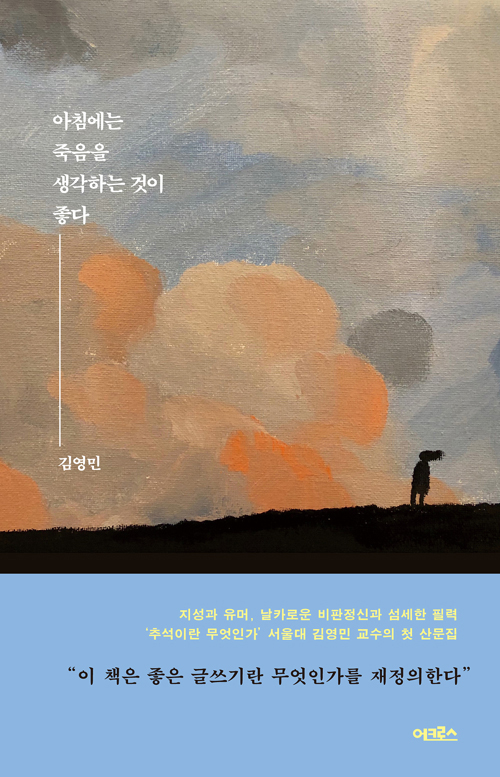

만나서 이야기 들으면 나도모르게 보험이나 금융계약서에 사인하고 있을거 같당;;
잼났음 :)
24
역사상 가장 뛰어난 권투 선수 중 한 사람이었던 마크 타이슨은 이렇게 말했다. “누구나 그럴싸한 계획 하나씩은 가지고 있다. 처맞기 전까지는.” 사람들은 대개 그럴싸한 기대를 가지고 한 해를 시작하지만, 곧 그 모든 것들이 얼마나 무력하게 무너지는지 깨닫게 된다. 링에 오를 때는 맞을 것을 각오해야 한다. 따라서 나는 새해에 행복해지겠다는 계획 같은 건 없다.
361비문 없어야 하고요, 헛소리하면 안 되지요. 논리와 증거에 의해서 상대를 설득해야 하는 글쓰기 훈련, 그거 굉장히 중요합니다. 정교한 논리와 사실에 근거한 글쓰기, 그걸 중요한 덕목으로 삼고 있습니다. 비문을 완전히 피하기는 어렵지만 비문 남용은 굉장히 불성실한 태도라고 생각합니다.
퇴끼와 북꼬 야매독서모임
북꼬 페이지: